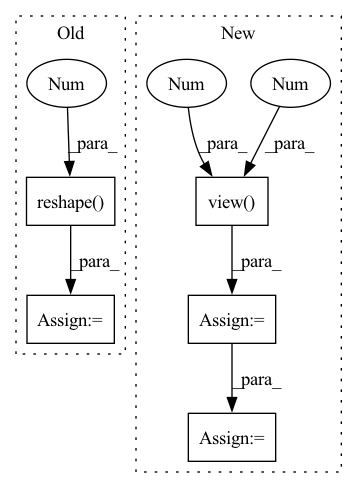

Pattern ID :37528
Before Change
stride_lists.extend([stride] * (grid_height * grid_width * self.num_anchors))
wh_weights = torch.as_tensor(stride_lists, dtype=dtype, device=device)
wh_weights = wh_weights.reshape(-1 , 1)
return wh_weights
def set_xy_weights(self, grid_sizes, dtype, device):After Change
for size, stride in zip(grid_sizes, self.strides):
grid_height, grid_width = size
stride = torch.as_tensor([stride], dtype=dtype, device=device)
stride = stride.view(-1 , 1 )
stride = stride.repeat(1, grid_height * grid_width * self.num_anchors)
stride = stride.reshape(-1, 1)
wh_weights.append(stride)
return torch.cat(wh_weights)In pattern: SUPERPATTERN
Frequency: 3
Non-data size: 5
Instances Fragment ID: 108071344
Project Name: zhiqwang/yolov5-rt-stack
Commit Name: 9e97b20d3a37ef80a23bf69df9216d69d6a9c951
Time: 2020-11-09
Author: zhiqwang@outlook.com
File Name: models/anchor_utils.py
M Class Name: AnchorGenerator
N Class Name: AnchorGenerator
M Method Name: set_wh_weights(4)
N Method Name: set_wh_weights(4)
M Parent Class: nn.Module
N Parent Class: nn.Module
M File Name: models/anchor_utils.py
N File Name: models/anchor_utils.py
M Start Line: 23
M End Line: 32
N Start Line: 23
N End Line: 33
Before Change
def __call__(self, pkg):
pkg = format_package(pkg)
wav = pkg["chunk"]
wav = wav.data.numpy().reshape(-1 ) .astype(np.float32)
warp_factor = random.random() * (self.factor_range[1] - \
self.factor_range[0]) + \
self.factor_range[0]After Change
warp_factor = random.random() * (self.factor_range[1] - self.factor_range[0]) + self.factor_range[0]
samp_warp = wav.shape[0] + int(warp_factor * wav.shape[0])
samp_warp = 10000
rwav = kaldi.resample_waveform(wav.view(1 , -1 ) , self.orig_freq, samp_warp)
rwav = rwav.view(-1)
if len(rwav) > len(wav):
mid_i = (len(rwav) // 2) - len(wav) // 2
rwav = rwav[mid_i:mid_i + len(wav)]
if len(rwav) < len(wav):
diff = len(wav) - len(rwav)
P = (len(wav) - len(rwav)) // 2
if diff % 2 == 0:
rwav = torch.cat((torch.zeros(P, ),
rwav,
torch.zeros(P, )),
axis=0)
else:
rwav = torch.cat((torch.zeros(P, ),
rwav,
torch.zeros(P + 1, )),
axis=0)
rwav = rwav.view(1, -1)
return rwav Fragment ID: 108071328
Project Name: shangeth/wavencoder
Commit Name: d6ac9e52ccc9dd3afdfc311ad0515c24ca179648
Time: 2020-10-27
Author: shangethrajaa@gmail.com
File Name: wavencoder/transforms/speed.py
M Class Name: SpeedChange
N Class Name: SpeedChange
M Method Name: __call__(2)
N Method Name: __call__(2)
M Parent Class:
N Parent Class:
M File Name: wavencoder/transforms/speed.py
N File Name: wavencoder/transforms/speed.py
M Start Line: 9
M End Line: 38
N Start Line: 12
N End Line: 36
Before Change
depth = torch.clamp(depth - near, min=0) / (far - near)
image = image.reshape( B, N, 3 )
if depth is not None:
depth = depth.reshape(B, N)
return depth, imageAfter Change
// return: image: [B, N, 3], depth: [B, N]
prefix = rays_o.shape[:-1]
rays_o = rays_o.contiguous().view(-1 , 3 )
rays_d = rays_d.contiguous().view(-1, 3)
N = rays_o.shape[0] // N = B * N, in fact
device = rays_o.device
if bg_color is None: Fragment ID: 108071330
Project Name: ashawkey/torch-ngp
Commit Name: 76f7329a1c2608e424872e940326cb3f6801eb51
Time: 2022-03-24
Author: ashawkey1999@gmail.com
File Name: nerf/renderer.py
M Class Name: NeRFRenderer
N Class Name: NeRFRenderer
M Method Name: run_cuda(7)
N Method Name: run_cuda(7)
M Parent Class: nn.Module
N Parent Class: nn.Module
M File Name: nerf/renderer.py
N File Name: nerf/renderer.py
M Start Line: 229
M End Line: 309
N Start Line: 233
N End Line: 314